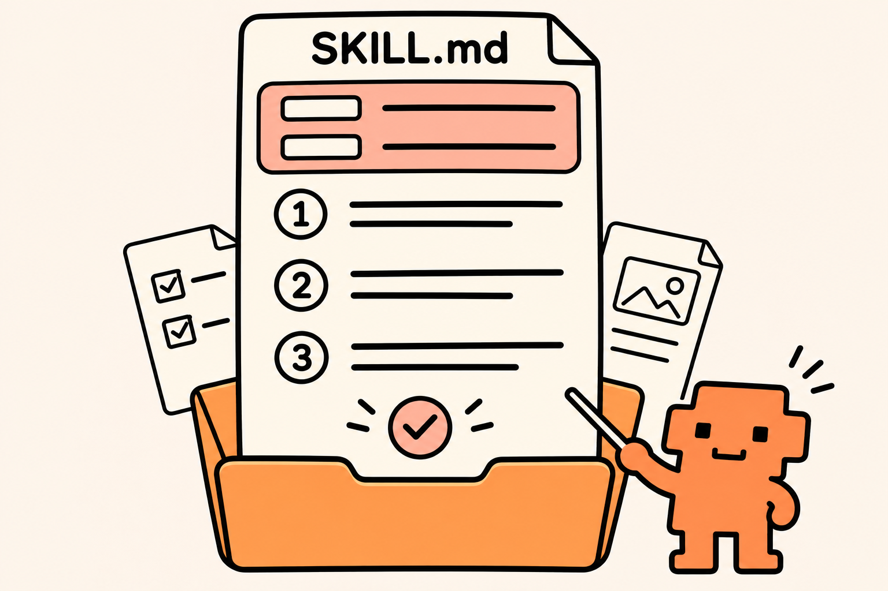

Back to the courseAnatomy of a skill

Settings at the top: YAML stores labels and values, such as the name and when to use the skill.
Instructions below: Markdown contains headings, lists and plain sentences describing the task.
You can ask Claude to write the file. You do not need to memorize the format.
A shortened example
---
name: meeting-to-work
description: Use for meeting follow-up.
---
# Steps
1. Read the meeting.
2. Keep agreed tasks; flag unknowns.
3. Cite the source for each task.
Use the full tested skill supplied with the meeting project for the exercise. This shortened version illustrates the format.
Official skill documentation